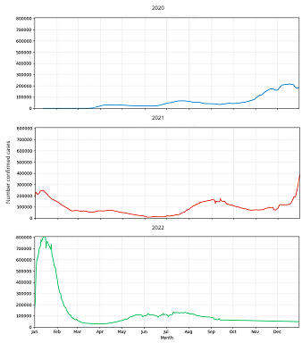
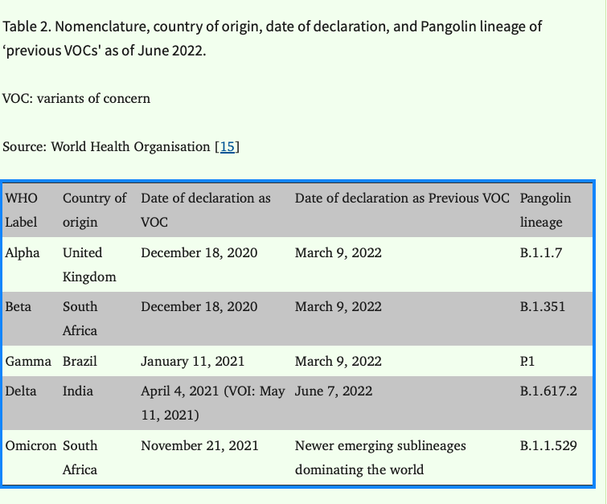

A3: Visualization Critique and Redesign
Kendall Nakai - knakai@mit.edu
Insights about the data/visualization
I have to admit, the questions I started out with weren’t possible to answer because the data available wouldn’t help answer them. I started out with the following questions:
- On my screen, 150k cases is about the width of my index finger, so anything thinner is less and thicker is more
- There are 12 slices of the figure, each representing a month so the sprial’s location tells me which month I’m in, also denoted by Jan at 12:00, April at 3:00, July at 6:00, and Oct at 9:00
- The beginning of the year is where 12:00 would be on a clock, which is where each of the years start
- According to the “helper text”, anywhere given on the line is the “7-day average”
- On the scale of the entire visualization, there are slight peaks and troughs until about November 2020, where cases begin to peak heavily until about mid-February 2021, where it recedes but is still larger than 2020 until mid-May 2021, which to my knowledge was when most of the immunocompromised people had been able to get their first vaccines by. The trend then goes to appearedly less cases than 2020 before piking again at the beginning of August 2021, rising, then falling a small amount by October 2021, then remaining steady until mid-December 2021 where it then begins peaking into exponential territory and that’s where the data ends
- The article confirms trends seen in the chart seems to be routine or “the norm” but that this “wave” is different than the other “spikes”. However, it also specifies that while the Omicron variant is more contagious, it’s less severe. The next data visualization shows the projections as a surge and discussing how hospitalizations and deaths are uncertain due to to more variants emerging “For example, if twice as many people become infected but these people are half as likely to be hospitalized, the demand for hospital beds would be the same.”
- The article has implications of daily life impact for workers, but also has hope in vaccinations
- The article discusses uncertainty about projection, which might be why Dr. Shaman made two separate visualizations
- There is also discussion on large cities like New York spiking earlier and others following later
Design critique
Dr. Shaman’s team’s visualization in the New York Times article on Covid-19 cases and the spiking Omicron variant is eye-catching, unusual, and therefore standout in terms of Covid-19 “classic” visualizations (i.e. flattening the curve) like a line graph/area chart. The most important trends of the underlying data is well-represented and easy to identify for the intended audience, a general news viewer like myself since I can easily compare that the spikes are around the beginning of 2021 in area, but the current one in 2022 is growing even larger, which based on the article is crisply the intended message of “When to expect Omicron to peak” which is Jan 2022. Since the visualization follows the idea of “time”, going 2020 spiraling into 2021, then 2022, a reader is quickly able to pick up on that time goes clockwise, and since there are 12 hours represented on a clock, I can see there are 12 months represented on this visualization. In my opinion, the main highlighted messages of a visualization should be an explanatory experience, and I think this visualization does that.
However, reading the nuances of the visualization is tricky and I wouldn’t rely on it for any more than the main message of a spiral timeline, as the exploratory experience waxes, then quickly wanes. For instance, the area of 150k cases is shown but since it’s on an area scale, it’s difficult for the reader to correctly interpret what the scale of cases is beyond that since area takes on such a non-linear proportion and its initial presentation as a triangle make it impossible to even correctly guesstimate how many cares there are in a given part of the visualization. If there’s some delineation of proportion on a scale, since there’s the triangular/pie/clock-like structure, there could also be some more obvious conceptualization of number of cases. Additionally, since the years are expanding on an uneven spiral, getting larger and larger, the time expansion is also confusing. The label of “7-day average” doesn’t tell me anything because I don’t know what proportion of time it’s referring to since 2020 is smaller in circumference than 2021 and 2022. In this case, the design could be improved by being more consistent in spiral or if not that utilize all the extra space created. The visualization is representative of a message of Covid-19 peaking but the article’s main purpose is actually discussing the Omicron variant in comparison to the previous variants so it could use the empty space of both unclear number of cases and unclear time to communicate something about variants. While I believe it could be in the design to obfuscate these to make the main point clearer, I think the other graphic in the article on projected cases could be communicated in the same spiral fashion, giving a more detailed graphic of Omicron’s impact.
Visualization Sketches
Sketch 1
Some inspiration

The sketch

Design rationale
- Motivation: Experiment with both area graph form and some level of Sunburst and Nightingale Rose charts which seem to have a connection to the NYT spiral
- Communicate:
- Month over month change more clearly than the NYT spiral and clarity of what the area represents in number form
- Projected of Jan 2022
- Toll on healthcare system by having another area above each year to communicate and show how the 2022 omicron could overwhelm the healthcare system
- What "7-day average" means in terms of time within each month (i.e. week over week)
- Worked well: Does seem more clear in terms of what area represents
- Didn't work well: Sketch needs more color to differentiate but the black and white is kinda cool
- Explore next: Variants and how to express
Sketch 2
Some inspiration

The sketch

Design rationale
- Motivation: In A1, I experimented with data points using specialized images(?) characters(?) as the points themselves, like ties of a kite or music notes but they lacked context of the actual assignment. This time I wanted to try to incorporate the same idea but in context
- Communicate:
- When specific variants emerge
- When specific variants become relevant in spikes in numbers
- Warning of strain on healthcare system
- Projected huge difference in spike from variant compared to previous years
- Worked well: I think all the little extras I added like the warning for healthcare and how high the 2022 spike was compared to any other year was good
- Didn't work well: The variants as data points add a lot of clutter and it isn't entirely clear what they're trying to express
- Explore next: I wanted to explore this in a more hifi version with the actual data so I did so below but wasn't actually able to successfully incorporate much from the sketch because it is too difficult! Sometimes some abstraction is fun but not feasible

Sketch 3
Some inspiration

The sketch

Design rationale
- Motivation: In the The Data Visualisation Catalog and the D3 Gallery, I saw a lot of cool ways to link data points through nodes and different facets so I wanted to try to do so with the idea of variants over the years
- Communicate:
- Sheer scale of 2022 and potential compared to 2021 and 2020
- How different variants have interacted with each other and played a role in the numbers
- Variants relationships with each other since they are created from old versions
- Something more simple than the circular charts since bar charts tend to be more readable and familiar and most importantly binary
- Worked well: The idea was cool and I was wondering how I would relate my idea to COVID and I think it makes sense
- Didn't work well: I don't think this is feasible to generate whatsoever, I don't know where I would start
- Explore next: Next is the final viz!!!
Final Visualization Design

Final Writeup
My design hopes to convey how actuley different the scale of the Omicron variant is on the current and upcoming confirmed cases of Covid-19 as of the publication date of the NYT article on Jan 6, 2022. I chose a radial stacked bar chart where the cumulation of days of the year makes the data more smoothed over and less choppy than standard bars. I used the the radial graph to communicate the data in a circular time scale annually. I made sure to have lines at each month marked and inner lines of confirmed cases marked so viewers could get a good scale. I used black dots to highlight specific data of important, such as the dates of variants coming out where the reader can then see the spike of the Delta variant and the current spike of the Omicron variant and how different it is. I also included the previous highest number of cases on 7 day average from the year before to give scale. In red, I highlighted how large of a jump the newest variant shows, and use a dotted line to show prediction of trajectory, based ont he NYT article. I also wanted to convey uncertainty in impact of healthcare and staffing shortages so used an arrow pointing to the blank space of the "future." I took a loose interpretation of submission having a single chart, as I utilized "Spotlight on variants" as a callout to something I found important, which is the same representation of data. I really liked the "zoom ins" from the reading group's discussion of the visualization from "Iraq's Bloody Toll" and mine zooms in on the variants and shows dates of other variants including Alpha, Beta, and Gamma (see appendix for citation) and further shows how Omicron is different than previous variants.
The process of Critique by Redesign process worked very effectivley as I was able to iterativley identify aspects of the original visualization I wanted to change, explore ways I can do so, and combine it into a final piece. My original critiques included the spiral design and lack of clear labeling more than the "150K" cone made it difficult to interpret exact case numbers, span of time, information about the Omicron variant (which was in the title of the article), further trajectory of impact without looking at the second figure in the article, and comparison to previous variants. My final design addresses each of these because each of my sketches iterated on a different aspect. The largest tradeoff was that my graph took more time to look at all the different pieces whereas the NYT one was lightweight, simple, and easy to get the message quickly. However, I think the main message is still very clear by the trajectory that leaps off the chart, and the rest someone can take their time with. In the middle of my work, however, I forgot to save and too late, my program crashed, and I realized I included all of the 2022 data, not just up to the NYT article date Jan 6, 2022 so there's some smoothing over I had to do in Figma and some I couldnt' fix and it was too late to recreate. However, I did address this in the little legend/key.
Appendix
External data of dates for variant emergence dates to assist in the final visualization is from Table 2 of NIH publication, Emergence of COVID-19 Variants: An Update:
